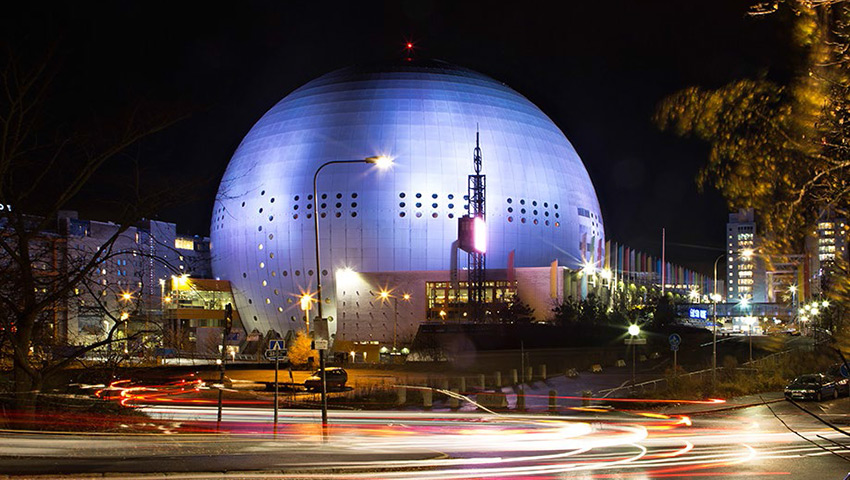
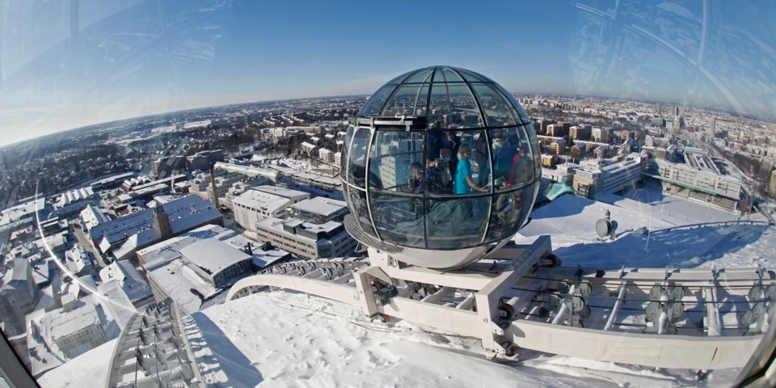
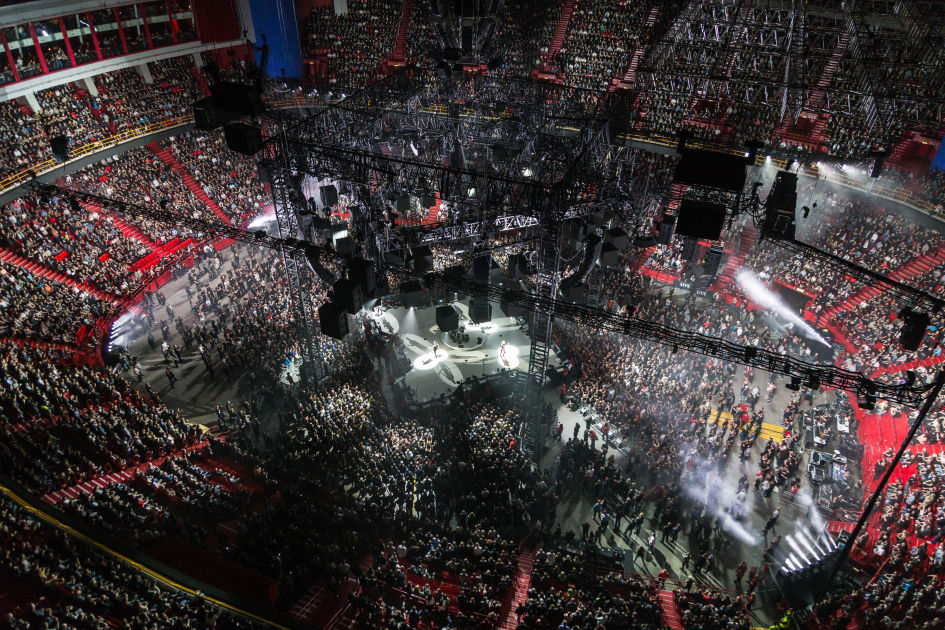

The ericson globe (also known as Globen) is the largest spherical building, boasting a volume of 605 000 cubic meeters.
Construction of the Ericson Globe was completed on the 19th of Feburary, 1989. Its primary role is as Swedens national ice hockey rink,
though it dose host conserts, with notable artists playing there being U2, Beyonce and Metallica, the latter of which have set
the globes attendance record of 17,303 fans attending the concert. It has additionaly hosted the 2000 and 2016 Eurovision song contests.

The Ericson Globe features seating for more than 16,000, free wifi around the entire venu. A side attraction of the Ericson Globe is the skyview,
a gondala that can take you up to the apex of the building. From the vantage point provided by the skyview, you are able to view the entirety
of Stockholm.

Many world famous acts have performed at the ericson globe. From Beyonce to the attendance record setting Metallica there is no shortage of music
at the Ericson Globe. When not staging the stars, The Globe serves as Sweedens national ice hocky stadium. In 2009 a cottage was bolted to the roof
of the sphere to represent the advanced technology requiered to create the Globe along with Swedens rural rutes.
